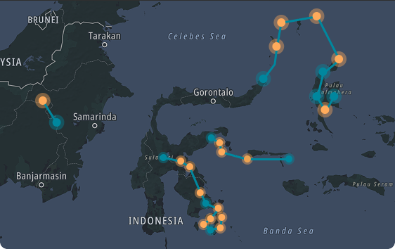

Site Temperature

About Site
| Site | Kab./kota | Provinsi | Longitude & Latitude | Catatan |
|---|---|---|---|---|
| Long Bagun | Mahakam Ulu | Kalimantan Timur | 115°14'29.51"E 0°30'50.87"N | Service Point |
| Sendawar | Kutai Barat | Kalimantan Timur | 115°40'0.44"E 0°13'54.19"S | Interconnection Point |
| Bungku | Morowali | Sulawesi Tengah | 115°14'29.51"E 0°30'50.87"N | Service Point |
| Petasia | Morowali | Sulawesi Tengah | 115°14'29.51"E 0°30'50.87"N | Service Point |
| Tentena | Poso | Sulawesi Tengah | 115°14'29.51"E 0°30'50.87"N | Interconnection Point |
| Wanggudu | Konawe Utara | Sulawesi Tenggara | 115°14'29.51"E 0°30'50.87"N | Service Point |
| Kendari | Kota Kendari | Sulawesi Tenggara | 115°14'29.51"E 0°30'50.87"N | Interconnection Point |